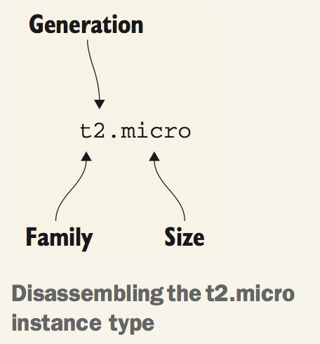
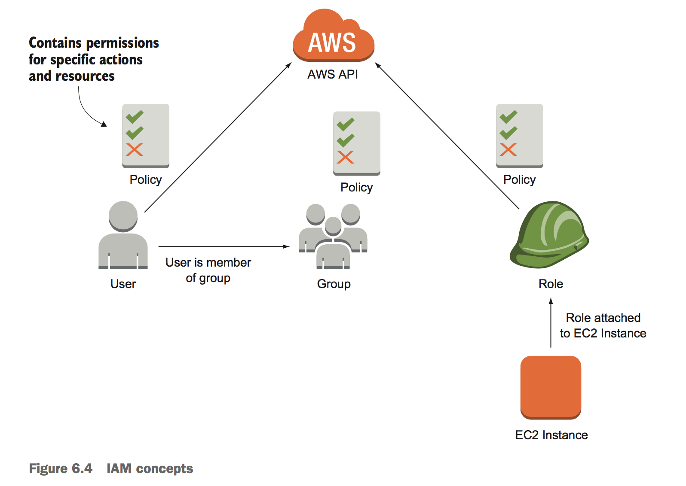
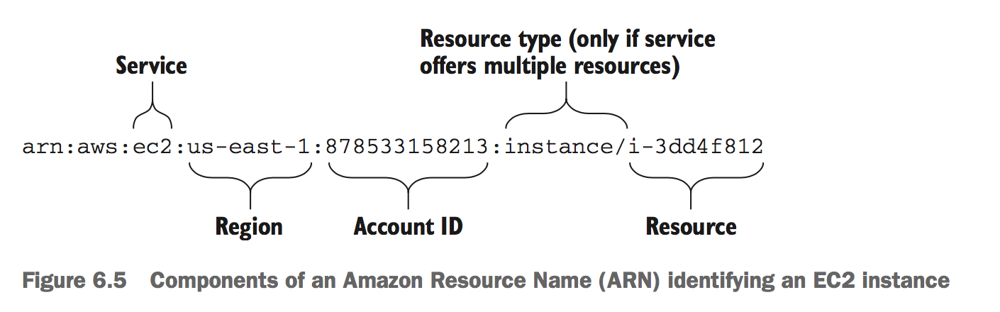
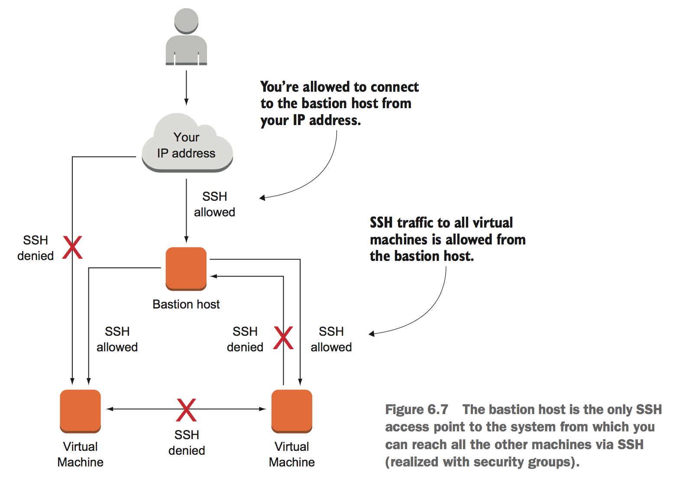
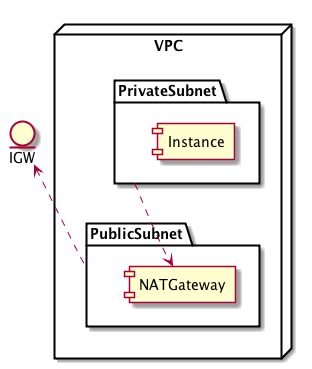

AWS
Table of Contents
| Author | Hao Ruan (haoru@cisco.com) |
| Date | 2019-04-23 22:30:56 |
Table of Contents
1 EC2
1.1 Instance Families

- T family Cheap, moderate baseline performance with the ability to burst to higher performance for short periods of time
- M family General purpose, with a balanced ration of CPU and memory
- C family Computing optimized, high CPU performance
- R family Memory optimized, with more memory than CPU power compared to M family
- D family Storage optimized, offering huge HDD capacity
- I family Storage optimized, offering huge SSD capacity
- X family Extensive capacity with a focus on memory, up to 1952 GB memory and 128 virtual cores
- F family Accelerated computing based on FPGAs
- P, G, and CG family Accelerated computing based on GPUs
1.2 User Data
The user data is always accessible from the VM with a HTTP GET request to http://169.254.169.254/latest/user-data .
1.3 CLI
1.3.1 list of running instances
aws ec2 describe-instances --filters "Name=instance-type,Values=m4.xlarge"
1.3.2 list of Images
$ aws ec2 describe-images --query "Images[0].ImageId" "ami-146e2a7c" $ aws ec2 describe-images --query "Images[0].ImageId" --output text ami-146e2a7c $ aws ec2 describe-images --query "Images[*].State" ["available", "available"]
2 Cloud Formation
A basic CloudFormation template is structured into five parts:
- Format version The latest template format version is 2010-09-09
- Description What is this template about?
- Parameters Parameters are used to customize a template with values: for example, domain name, customer ID, and database password.
- Resources A resource is the smallest block you can describe. Examples are a virtual machine, a load balancer, or an Elastic IP address.
- Outputs An output returns something from your template, such as the public name of an EC2 instance.
2.1 Parameters
Parameters: KeyName: Description: 'Key Pair name' Type: 'AWS::EC2::KeyPair::KeyName' # Only key pair names are allowed. NumberOfVirtualMachines: Description: 'How many virtual machine do you like?' Type: Number Default: 1 # The default is one virtual machine. MinValue: 1 MaxValue: 5 # Prevent massive costs with an upper bound. WordPressVersion: Description: 'Which version of WordPress do you want?' Type: String AllowedValues: ['4.1.1', '4.0.1'] # Restricted to certain versions
2.1.1 Valid types
- String
- Number
- AWS::EC2::AvailabilityZone::Name
such as
us-west-2a - AWS::EC2::Image::Id
- AWS::EC2::Instance::Id
- AWS::EC2::KeyPair::KeyName
- AWS::EC2::SecurityGroup::Id
- AWS::EC2::Subnet::Id
- AWS::EC2::Volume::Id An EBS volume ID (network attached storage)
- AWS::EC2::VPC::Id
- AWS::Route53::HostedZone::Id A DNS zone ID
2.1.2 Constraints
- Default
- NoEcho
- AllowedValues
- AllowedPattern
- MinLength, MaxLength
- MinValue, MaxValue
- ConstraintDescription
2.2 Resources
A resource has at least a name, a type, and some properties.
3 IAM
IAM controls who (authentication) can do what (authorization) in your AWS account.

- IAM user Used to authenticate people accessing your AWS account.
- IAM group A collection of IAM users.
- IAM role Used to authenticate AWS resources, for example an EC2 instance.
- IAM policy Used to define the permissions for a user, group, or role.
3.1 ARN

3.2 CLIs
3.2.1 Get account id
aws iam get-user --query "User.Arn" --output text
3.2.2 Create groud and user
aws iam create-group --group-name "admin" aws iam attach-group-policy --group-name "admin" --policy-arn "arn:aws:iam::aws:policy/AdministratorAccess" aws iam create-user --user-name "myuser" aws iam add-user-to-group --group-name "admin" --user-name "myuser" aws iam create-login-profile --user-name "myuser" --password "$Password"
4 Security Group
4.1 Bastion Mode

5 VPC
5.1 ACL
Network ACLs restrict traffic that goes from one subnet to another, acting as a firewall.
There's an important difference between security groups and ACLs: security groups are STATEFUL, but ACLs aren't. If you allow an inbound port on a security group, the corresponding response to requests on that port are allowed as well. That's not true for ACLs. Security groups are tied to an instance, while Network ACL are tied to the subnet.
Recommend to start with using security groups to control traffic. If you want to add an extra layer of security, you should use ACL on top.
5.2 NAT Gateway

- VPC 与 IGW 绑定
- PrivateSubnet 默认路由指向 NATGateway
- Instance 无需分配外网地址（即无法被外部访问）
创建 VPC 时会生成默认路由表，Subnet 默认情况下将继承这个路由表，该路由表只有一条记录（ VPC 网段的 local 路由）。 通常会自定义一个新的路由表给 Subnet 使用，该路由表被 attach 至 VPC （即包含 VPC 网段的 local 路由)，再添加一条指向 IGW 的 default 路由。